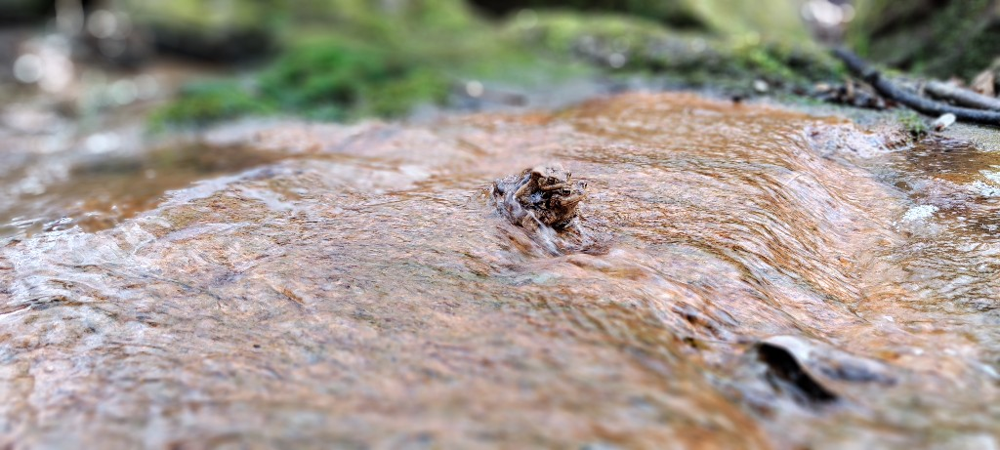
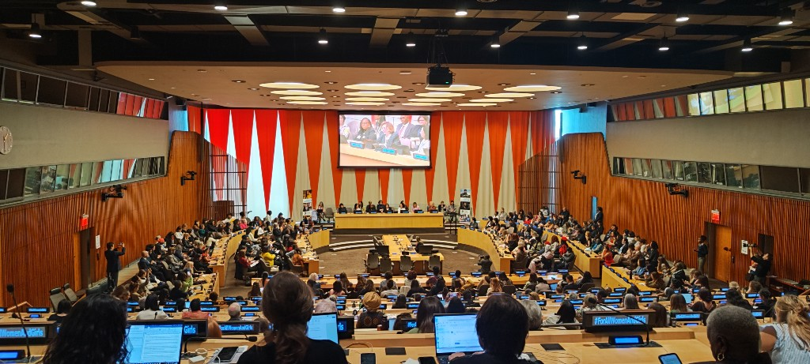
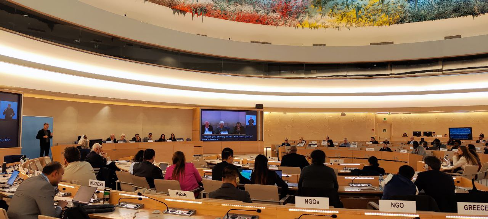
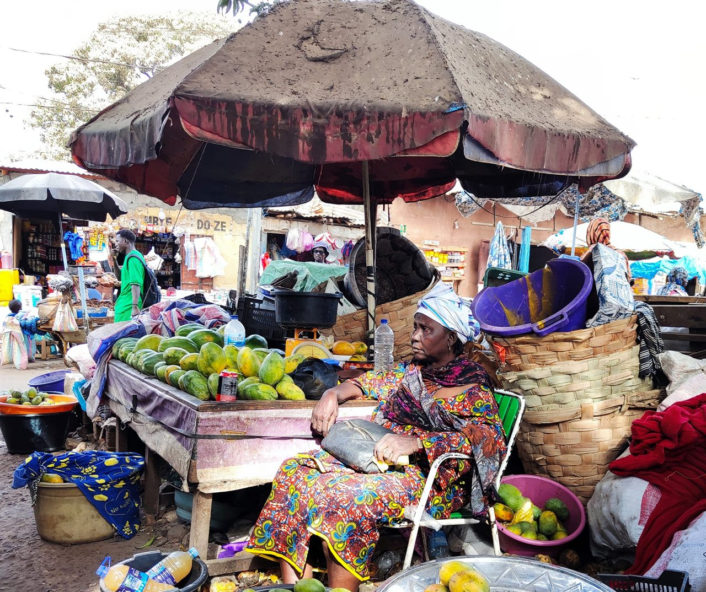

The roadmap to 2026: accelerating SDG 6 through the UN Water Conference
With 2.2 billion people still lacking safely managed drinking water, the December 2026 UN Water Conference in the UAE offers a clear opportunity to move from dialogue to durable action on water and sanitation.
Water & Sustainable Development

Image: Freshwater ecosystems and biodiversity (2025).
2.2bn
People lacking safely managed drinking water
3.5bn
People without safe sanitation services
50 yrs
Gap between the 1977 and 2023 UN Water Conferences
Dec 2026
Conference dates: 2–4 December, UAE
A pivotal moment for global water governance
The 2026 UN Water Conference, scheduled for 2–4 December 2026 in the United Arab Emirates, is the most significant gathering on freshwater since the landmark UN Water Conference in Mar del Plata in 1977—and only the second since the 2023 New York conference that broke that long silence. Co-hosted by Senegal and the UAE, its central mandate is to accelerate progress on Sustainable Development Goal 6 (SDG 6): ensuring universal access to safe water and sanitation by 2030.
The stakes could not be higher. According to the UN-Water GLAAS 2025 Report, the world is “far off-track” to meet SDG 6. Progress has been uneven, underfunded, and frequently undermined by climate shocks, conflict, and institutional fragmentation. The 2026 conference must therefore do more than convene—it must catalyze concrete commitments, transformative partnerships, and scalable solutions.
The world has convened on water before—but ambition without accountability has left billions behind. 2026 must be different.
Six dialogues, one global agenda
The heart of the conference is a set of six interactive thematic dialogues, each co-chaired by two Member States chosen to reflect geographic and institutional balance. Designed as solution-focused working sessions rather than formal negotiations, the dialogues are expected to generate concrete recommendations, highlight best practices, and identify actionable partnership opportunities.
Water for people
Ghana & Switzerland
Human rights to water and sanitation; equity and access for marginalized communities.
Water for prosperity
China & Spain
The water–energy–food nexus; wastewater reuse; sustainable resource management.
Action-oriented outcomes, not political declarations
Unlike many UN summits that culminate in lengthy negotiated texts, the 2026 conference is deliberately structured to produce a concise summary document rather than a politically brokered declaration. This document—prepared by the co-hosts Senegal and the UAE—will chart a “Roadmap from Senegal to the UAE” and feed directly into the UN High-level Political Forum on Sustainable Development (HLPF).
This format is a deliberate design choice. By side-stepping formal negotiations, the conference can focus its energy on voluntary commitments and pledges, the sharing of replicable innovations, the formation of transformative multi-stakeholder partnerships, and generating measurable, time-bound targets for SDG 6 acceleration. Action replaces negotiation; implementation replaces aspiration.

Image: New York — ECOSOC Chamber (2026).
Building on 2023—and confronting the gap
The 2026 conference directly follows the UN 2023 Water Conference—the first global water summit in nearly 50 years, held in New York in March 2023. That conference produced a voluntary Water Action Agenda attracting thousands of commitments from governments, cities, businesses, and civil society. But follow-through has been inconsistent, and the GLAAS 2025 report is unambiguous: progress is falling far short of what 2030 demands.
The 2026 conference is mandated by three UN General Assembly resolutions: Resolution 77/334, which called for a follow-up to the 2023 conference; Resolution 78/327, which defined its structure and modalities; and Resolution 79/L.101, which established the thematic scope of the dialogues. Together, these frameworks provide both the political mandate and the technical architecture for the event.
The preparatory process
Preparation for the conference began well ahead of December 2026. A high-level international preparatory meeting took place in Dakar, Senegal, in January 2026, bringing together governments, UN agencies, NGOs, technical experts, and civil society organizations to help shape the agenda and pre-negotiate ambitious outcomes. Regional consultations have been conducted in parallel to ensure diverse perspectives—including those of the Global South—are embedded in the conference’s core outputs.
1) Translate dialogue into verifiable action. Every commitment made should include a named responsible party, a measurable indicator, and a reporting deadline.
2) Deepen cross-border and South–South cooperation. Transboundary basin agreements, regional knowledge networks, and South–South technology transfer are underutilized tools that 2026 must strengthen.
3) Unlock finance at the scale the crisis demands. The SDG 6 financing gap runs to hundreds of billions of dollars annually; 2026 must mobilize new public finance commitments and crowd in private capital.
The window to achieve SDG 6 by 2030 is narrow and closing. Governments, intergovernmental organizations, the private sector, and civil society all have a role to play—and the 2026 UN Water Conference is the most important shared platform they have. The world is watching.
A strategic roadmap for NGOs and parliamentarians engaging with the United Nations

Image: New York — United Nations Headquarters (2025).
Successfully engaging with the United Nations (UN)
requires a deep understanding of its complex procedures, from the
Economic and Social Council (ECOSOC)
to the
Human Rights Council (HRC).
This guide provides a strategic roadmap for parliamentarians and non-governmental organizations
(NGOs) seeking to maximize their impact on global policy.
ECOSOC is a principal UN organ responsible for coordinating economic, social, and environmental
work. It functions as the primary bridge between the UN and civil society and plays a central
role in the follow-up and review of the
2030 Agenda for Sustainable Development.
ECOSOC is the only formal entry point for non-state actors to establish an official relationship
with the UN. NGOs may apply for consultative status, which is granted upon recommendation of the
Committee on Non-Governmental Organizations
.
There are three categories of status: General, Special, and Roster—each determining the scope
of participation and engagement.
Human rights advocacy takes place primarily through the
Office of the High Commissioner for Human Rights (OHCHR)
and the UN Human Rights Council in Geneva. For those working on Freedom of Religion or Belief
(FoRB), engagement with UN Special Procedures is often the most effective route.
Image: United Nations — Civil society engagement (2025).
Advocacy tools include confidential Urgent Appeals—which remain non-public
until a communication is sent to the concerned state—and the
Universal Periodic Review (UPR)
,
a four-yearly review of each country’s human rights record.
Delivering an oral statement at the Human Rights Council is a high-visibility but tightly
regulated advocacy opportunity. Only ECOSOC-accredited organizations may register to speak,
time limits are strictly enforced, and statements must directly relate to the relevant agenda
item to avoid procedural interruptions.
Practical guidance on preparing effective interventions is provided by institutions such as
the
ISHR Academy,
which also offers support on navigating accreditation and access to UN premises.
Understanding the UN is like mastering a complex clockwork mechanism—every component must move
in sync to ensure advocacy efforts reach decision-makers and result in meaningful change.
What Drives Change?
Bridging knowledge, experience, and strategy for real-world impact
Image: Geneva — Human Rights Council, Forum on Minority Issues (2024).
Facts alone are rarely enough. While research and data are the foundation of solutions-based approaches, it depends to an equal degree how effectively they are communicated. Bridging the gap between community perspectives, scientific evidence, and actionable solutions is essential to translate knowledge into frameworks that work locally, regionally, and globally.
To inspire meaningful action, innovative ways of sharing knowledge are needed. While statistics and studies are vital, creative approaches—such as exhibitions, cultural performances, and interactive dialogues with decision-makers—can amplify understanding and make solutions tangible and memorable.
Experience and guidance help NGOs and civil society organizations navigate these avenues, while maintaining connections with UN agencies, permanent missions, and informal networks. By combining credibility, strategy, and communication, organizations can generate the political momentum necessary to turn ideas into real-world impact.
Partnerships with governments are often overlooked yet essential. When governments are democratic and open, collaboration enables solutions to be implemented effectively. Across the United Nations and international human rights spaces, respect for human rights and environmental protection works hand in hand with legitimacy and influence, allowing evidence-based solutions to reach the decision-makers who can make change happen.
From Local Solutions to Global Impact
Why community-driven approaches must reach international decision-making spaces

Image: The Gambia — Field visit (2023).
Non-governmental organizations (NGOs) are essential drivers of localized solutions
that address some of the world’s most pressing challenges. By designing specialized
measures for the most vulnerable communities—through systems of representation,
economic empowerment, or cultural and political participation—NGOs create models
that can often be adapted and applied across diverse global contexts.
Yet, many of these solutions remain local and invisible to the wider international
community. To maximize their impact, they must be brought to global arenas, including
the United Nations, regional human rights forums, and sustainable development
mechanisms, where they can be shared, amplified, and adapted. Lessons from the Sahel
region, for example, may soon provide solutions for areas struggling with
climate-related agricultural challenges.
As global crises grow more complex, local and regional organizations that focus on
rights-based advocacy and practical problem-solving must collaborate and bring their
expertise to international platforms. These spaces allow innovative, field-tested
solutions to scale, turning localized approaches into replicable programs that
address human rights and environmental challenges worldwide.
By combining local knowledge, experience, and wisdom with strategic international
engagement, NGOs ensure that practical solutions reach the decision-makers and global
audiences who can transform them into meaningful impact. Staying focused on this
mission, even amidst distractions and competing agendas, is key to achieving
long-term change.